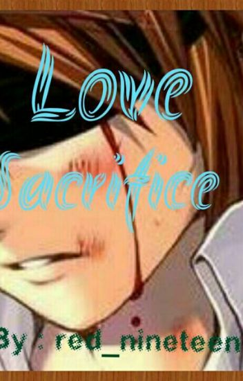

Love Sacrifices
A butterfly was inlove with a white rose.
One day, the butterfly proposed to her and she told him that when she turns red, that's the only time she'll love him.
The butterfly didn't fly away instead, he cut his body and spread his blood tot the white rose.
She turned red and fell inlove with the butterfly but he was no longer alive.
Love sacrifices are sometimes useless especially if that someone doesn't know how to appreciate. They will come to realize important thing when it's too late."